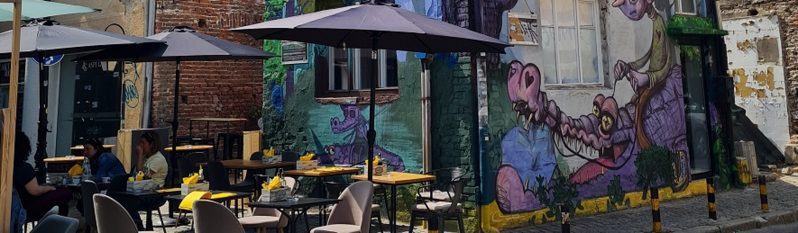

Plovdiv is often described as the cultural capital of Bulgaria and is one of the oldest continuously inhabited cities in the world. Located in southern Bulgaria, the city has a history that dates back more than six thousand years. Over time, it has been influenced by Thracian, Roman, Byzantine, and Ottoman civilizations, all of which have left their mark on the city’s culture and architecture.
The Old Town of Plovdiv is one of the most visited areas in the city. This historic district features colorful houses from the Bulgarian National Revival period, narrow cobblestone streets, and beautifully preserved buildings that now serve as museums, galleries, and cultural centers. Walking through the Old Town feels like stepping back in time, offering visitors a glimpse into Bulgaria’s rich heritage.
Another major attraction in Plovdiv is the Roman Theatre. Built during the first century, the theatre is remarkably well preserved and is still used today for concerts, performances, and cultural events. It stands as a reminder of the city’s importance during the Roman Empire and continues to be one of the most iconic landmarks in Bulgaria.
Modern Plovdiv is also known for its creative atmosphere, particularly in the Kapana District. This area has become a center for artists, designers, musicians, and entrepreneurs. Filled with street art, small cafes, craft shops, and galleries, Kapana represents the modern cultural identity of the city and provides visitors with a lively and artistic environment.